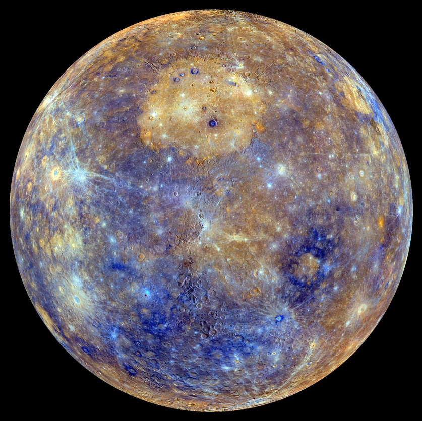
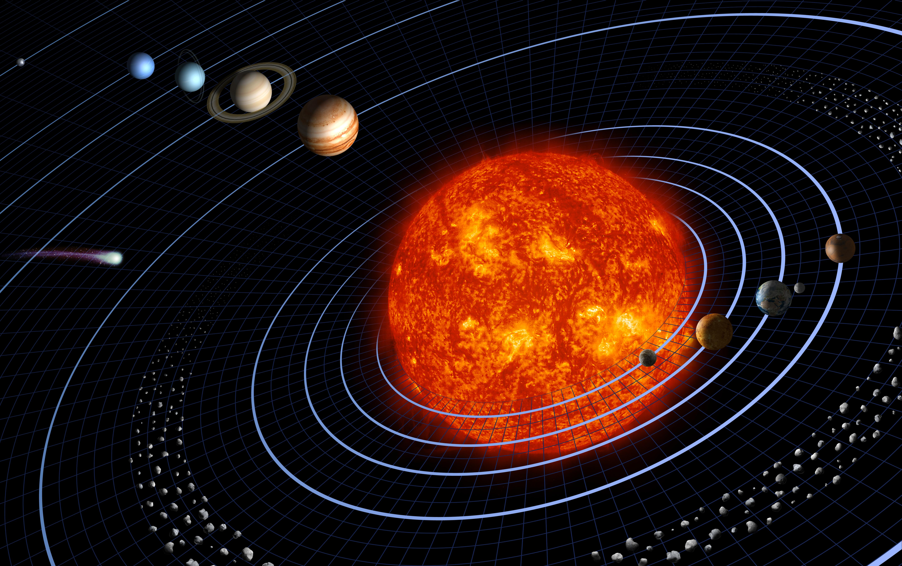
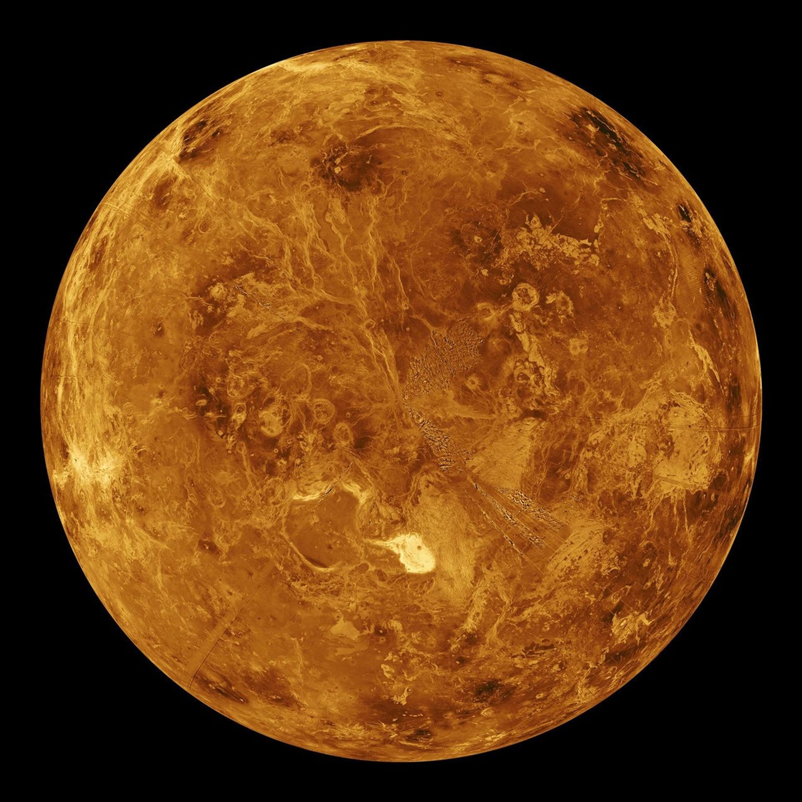
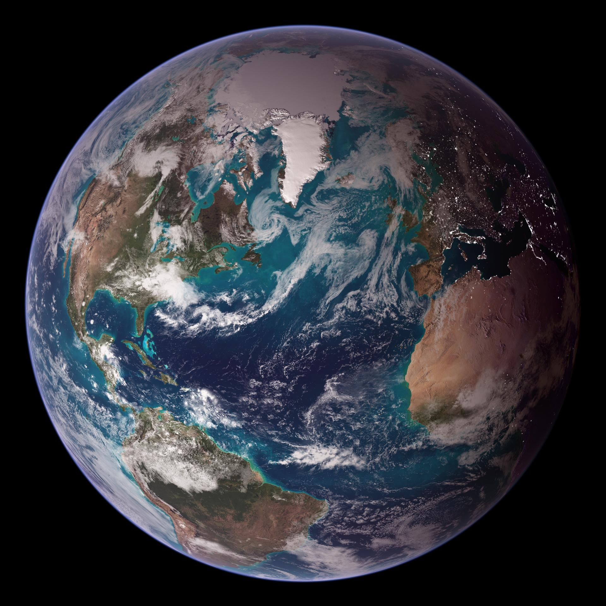
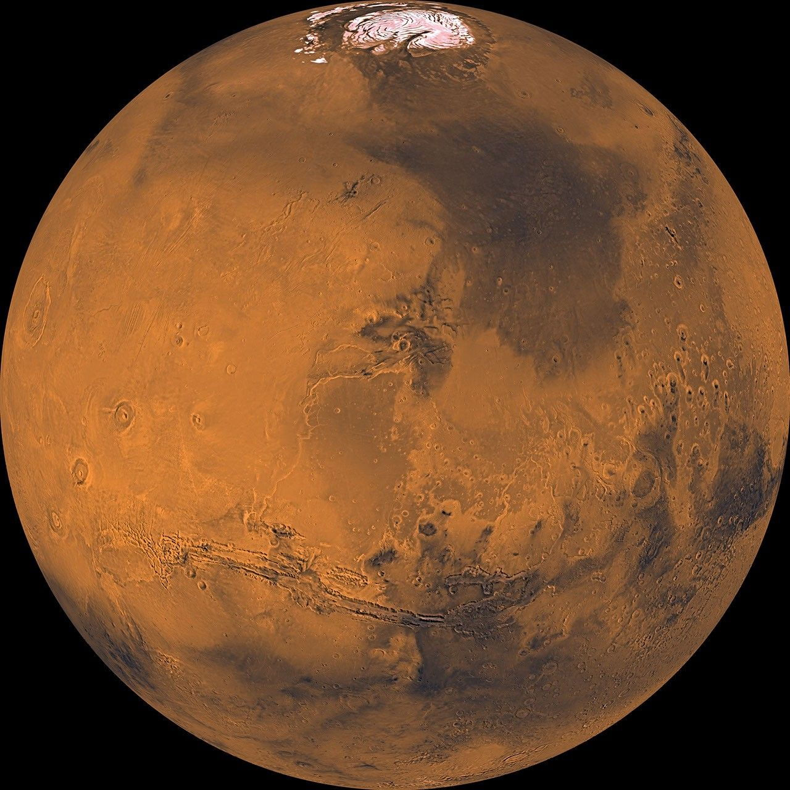
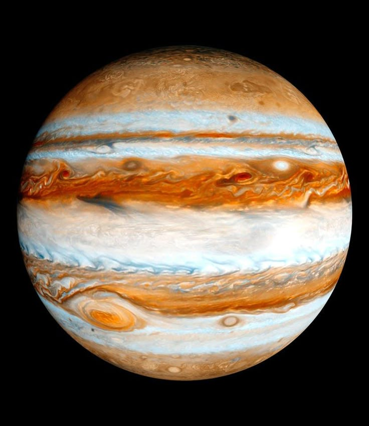
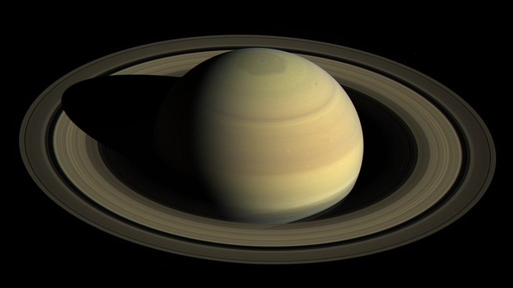
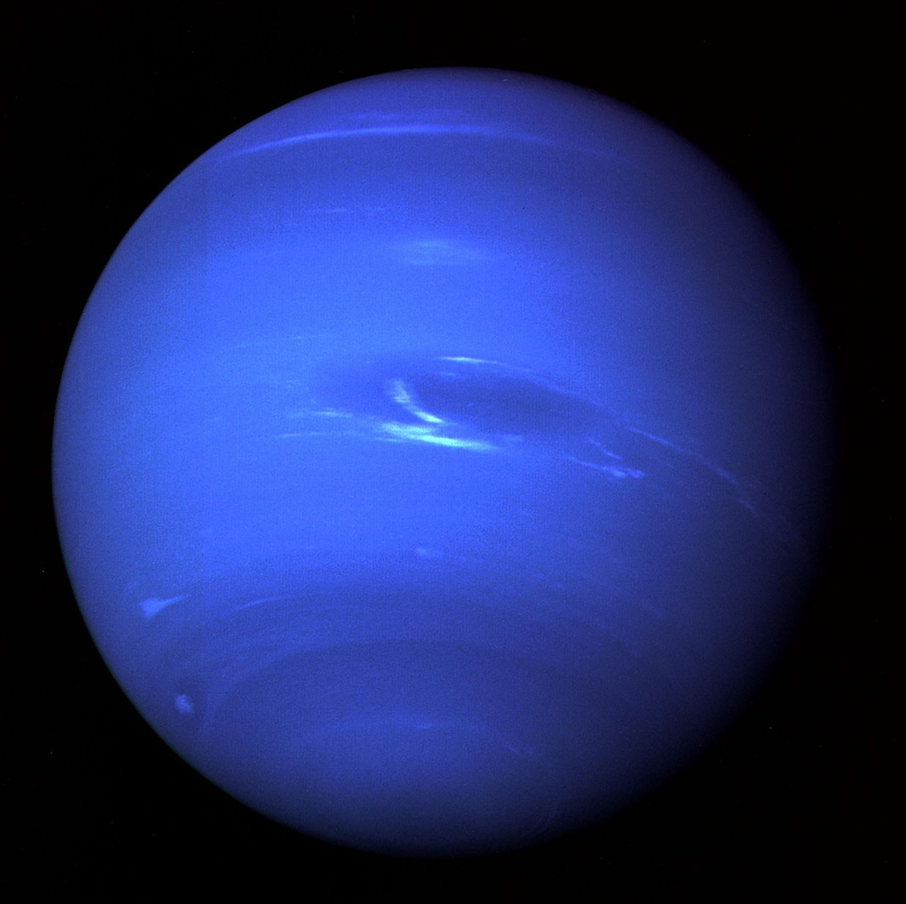
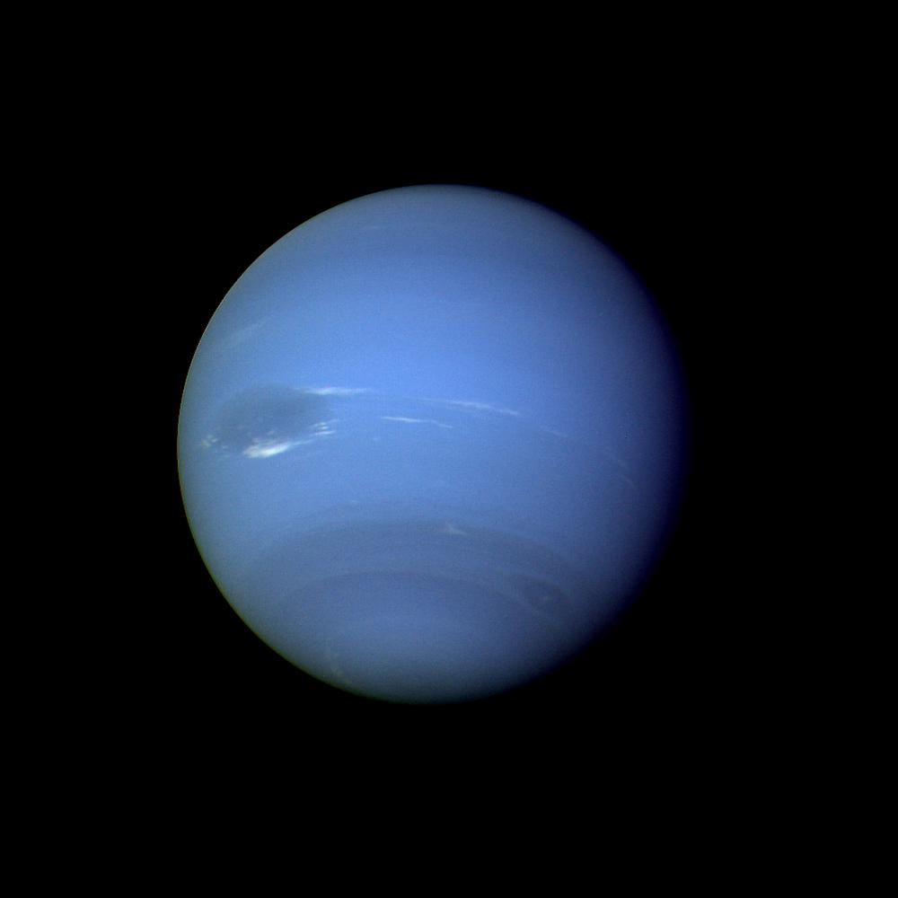
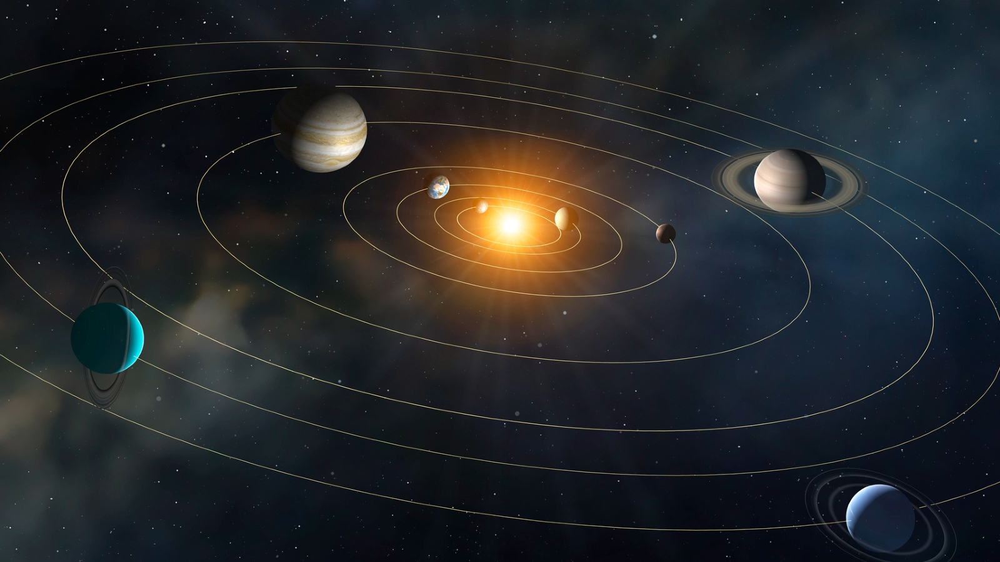

01
DIGITAL UNIVERSE • SOLAR SYSTEM
நமது சூரியக் குடும்பம்
சூரியனை மையமாகக் கொண்டு இயங்கும் எட்டு கோள்கள், அவற்றின் நிலவுகள், சிறுகோள்கள் மற்றும் பிற விண்வெளிப் பொருட்களால் உருவான அற்புதமான விண்வெளி அமைப்பை ஆராய்வோம்.
8
கோள்கள்
1
நட்சத்திரம்
4 + 4
Rocky + Giant
☀
SOLAR SYSTEM
Our cosmic neighbourhood
OUR COSMIC HOME
சூரியக் குடும்பம் எப்படி அமைந்துள்ளது?
சூரியக் குடும்பத்தின் மையத்தில் சூரியன் உள்ளது. அதன் ஈர்ப்பு விசை கோள்கள் உள்ளிட்ட பல விண்வெளிப் பொருட்களின் இயக்கத்தை வழிநடத்துகிறது.

SOLAR SYSTEM
01
சூரியனைச் சுற்றி இயங்கும் உலகங்கள்
நமது சூரியக் குடும்பத்தில் சூரியன், எட்டு கோள்கள், dwarf planets, moons, asteroids, comets மற்றும் பல சிறிய விண்வெளிப் பொருட்கள் உள்ளன.
☀️
சூரியன்
சூரியக் குடும்பத்தின் மைய நட்சத்திரம்
🪐
எட்டு கோள்கள்
நான்கு rocky planets + நான்கு giant planets
🌙
துணைக்கோள்கள்
பல கோள்களைச் சுற்றி இயற்கை நிலவுகள் உள்ளன
அறிவியல் குறிப்பு
சூரியக் குடும்பத்தின் எட்டு கோள்கள் சூரியனிலிருந்து அவற்றின் சராசரி தொலைவைப் பொறுத்து வெவ்வேறு சுற்றுப்பாதைகளில் இயங்குகின்றன. Pluto தற்போது ஒரு dwarf planet ஆக வகைப்படுத்தப்படுகிறது.
THE SOLAR FAMILY
சூரியன் முதல் Neptune வரை
நமது சூரியக் குடும்பத்தில் சூரியனைச் சுற்றி எட்டு முக்கிய கோள்கள் வெவ்வேறு தூரங்களிலும் வெவ்வேறு தன்மைகளுடனும் இயங்குகின்றன.
CENTRAL STAR
சூரியன் — Solar System-ன் மையம்
சூரியன் ஒரு நட்சத்திரம். அதன் ஈர்ப்பு விசை சூரியக் குடும்பத்தின் பெரும்பாலான பொருட்களின் இயக்கத்தில் முக்கிய பங்கு வகிக்கிறது.
01

02
03
04
05
06
07
08
4
Rocky Worlds
2
Gas Giants
2
Ice Giants
8
Total Planets
ORBITAL DYNAMICS
சூரியனைச் சுற்றும் கோள்கள்
ஒவ்வொரு கோளும் சூரியனிலிருந்து வெவ்வேறு தூரத்தில் தனது சுற்றுப்பாதையில் பயணிக்கிறது. சூரியனின் ஈர்ப்பு விசை இந்த orbital motion-ல் முக்கிய பங்கு வகிக்கிறது.

03
Orbit என்றால் என்ன?
Orbit என்பது ஒரு விண்பொருள் மற்றொரு விண்பொருளைச் சுற்றி இயங்கும் பாதை. நமது Solar System-ல் கோள்கள் சூரியனைச் சுற்றி வருகின்றன.
Sun
Gravitational centre
Planet
Travels along its orbit
Orbital Path
The path around the Sun
Gravity
சூரியனின் மிகப்பெரிய mass gravitational influence-ஐ உருவாக்குகிறது.
Distance Matters
கோள்கள் சூரியனிலிருந்து வெவ்வேறு சராசரி தூரங்களில் உள்ளன.
Different Years
சூரியனை ஒரு முறை சுற்றி முடிக்க ஒவ்வொரு கோளுக்கும் வெவ்வேறு காலம் தேவை.
💡
Did you know? சூரியனிலிருந்து அதிக தூரத்தில் இருக்கும் கோள்கள் பொதுவாக ஒரு முழு orbit-ஐ முடிக்க அதிக காலம் எடுத்துக்கொள்கின்றன.
COSMIC SCALE
கோள்களின் அளவு எவ்வளவு பெரியது?
நமது Solar System-ல் உள்ள கோள்களின் அளவுகள் ஒன்றுக்கொன்று மிகவும் வேறுபடுகின்றன. குறிப்பாக Jupiter மற்ற கோள்களை விட மிகப்பெரியது.

04
FROM SMALL TO GIANT
சிறிய பாறைக் கோள்கள் முதல் மிகப்பெரிய Giant வரை
Mercury போன்ற சிறிய terrestrial planet-களிலிருந்து Jupiter போன்ற மிகப்பெரிய gas giant வரை, Solar System-ன் planets பல்வேறு அளவுகளைக் கொண்டுள்ளன.
◉
Mercury
Smallest planet
🌍
Earth
Rocky world
🪐
Jupiter
Largest planet
INNER PLANETS
Rocky Worlds
Mercury, Venus, Earth மற்றும் Mars ஆகியவை terrestrial அல்லது rocky planets. இவை சூரியக் குடும்பத்தின் inner region-ல் உள்ளன.
Mercury
Venus
Earth
Mars
OUTER PLANETS
Giant Worlds
Jupiter மற்றும் Saturn gas giants. Uranus மற்றும் Neptune ice giants. இவை inner rocky planets-ஐ விட மிகப்பெரியவை.
Jupiter
Saturn
Uranus
Neptune
BEYOND THE PLANETS
கோள்களுக்கு அப்பால் என்ன இருக்கிறது?
Solar System என்பது எட்டு கோள்களால் மட்டும் ஆனது அல்ல. Asteroids, comets, moons மற்றும் தொலைதூர சிறிய விண்பொருட்களும் இதில் அடங்குகின்றன.
REGION 01
Asteroid Belt
Mars மற்றும் Jupiter ஆகியவற்றின் சுற்றுப்பாதைகளுக்கு இடையில் ஏராளமான சிறிய rocky bodies காணப்படுகின்றன.
ROCKY OBJECTS
OBJECT 02
Moons
பல கோள்களைச் சுற்றி இயற்கையான satellites உள்ளன. அவற்றில் சில மிகவும் சிக்கலான உலகங்களாக உள்ளன.
NATURAL SATELLITES
OBJECT 03
Comets
Comets என்பது ice, dust மற்றும் rock போன்ற பொருட்களைக் கொண்ட சிறிய விண்பொருட்கள்.
ICE + DUST
REGION 04
Kuiper Belt
Neptune-க்கு அப்பால் இருக்கும் தொலைதூரப் பகுதியில் பல icy bodies காணப்படுகின்றன.
ICY WORLD
♇
DWARF PLANET
Pluto
Pluto Solar System-ன் எட்டு முக்கிய planets-ல் ஒன்றல்ல. அது ஒரு dwarf planet ஆக வகைப்படுத்தப்படுகிறது.
01
Beyond Neptune
Kuiper Belt region
DIGITAL UNIVERSE EXPLORER
இன்னும் ஆழமாக Universe-ஐ Explore செய்யுங்கள்
Solar System-ஐத் தாண்டி Galaxy மற்றும் Universe பற்றியும் Digital Universe-ல் தொடர்ந்து கற்றுக்கொள்ளலாம்.
8
Planets
1
Central Star
∞
Discoveries
🚀
MISSION COMPLETE
சூரியக் குடும்பத்தை கடந்து செல்ல தயாரா?
Mercury முதல் Neptune வரை நாம் பார்த்துவிட்டோம். ஆனால் Universe இதைவிட மிகப்பெரியது. இன்னும் எண்ணற்ற நட்சத்திரங்கள், galaxies, black holes மற்றும் மர்மங்கள் நம்மை காத்திருக்கின்றன.
8
Planets
1
Central Star
∞
Discoveries